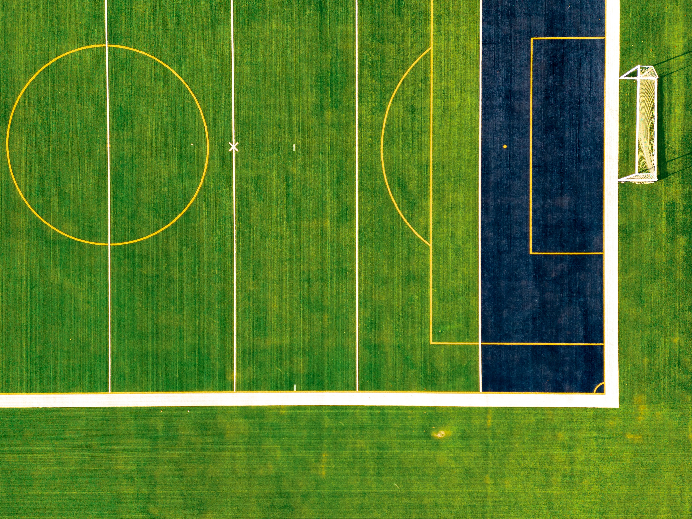

Sport, pertains to any form of competitive physical activity or game that aims to use, maintain, or improve physical ability and skills while providing enjoyment to participants and, in some cases, entertainment to spectators.

Sports can, through casual or organized participation, improve participants' physical health. Hundreds of sports exist, from those between single contestants, through to those with hundreds of simultaneous participants,